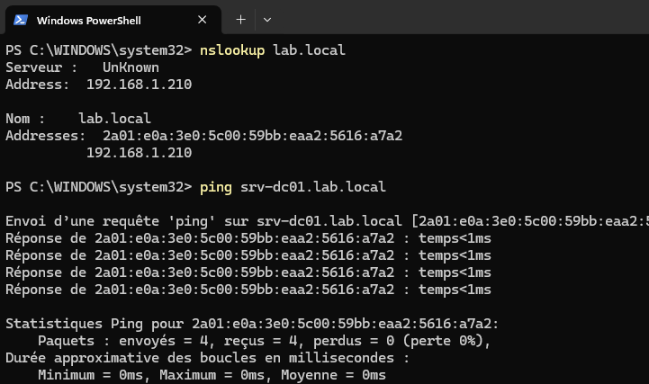
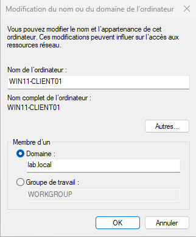
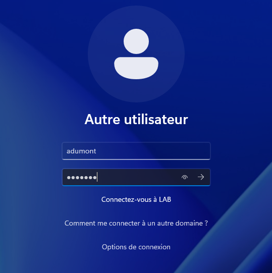

TP07 - Jonction du poste client
Théorie : Cours - Active Directory
Captures :99-Captures/TP07/· Prérequis : TP06-Utilisateurs-et-groupes
Objectif
Joindre WIN11-CLIENT01 au domaine lab.local et valider l'authentification d'un utilisateur du domaine.
Architecture
| Élément | Valeur |
|---|---|
| Poste | WIN11-CLIENT01 |
| IP | 192.168.1.211 |
| Domaine | lab.local |
| DC | SRV-DC01 (192.168.1.210) |
Prérequis
- [v] TP06-Utilisateurs-et-groupes validé
- [v] WIN11-CLIENT01 opérationnel
- [v] DNS du client pointant vers 192.168.1.210
Étapes
1. Vérification de la résolution
nslookup lab.local
ping srv-dc01.lab.local

2. Jonction au domaine
Paramètres → Système → Informations système → Domaine ou groupe de travail
Rejoindre un domaine → lab.local

3. Connexion utilisateur domaine
Se connecter avec un compte utilisateur créé au TP06.

Validation
- [v] Poste joint au domaine
lab.local - [v] Redémarrage effectué
- [v] Connexion utilisateur domaine réussie
Progression
| Étape | Lien |
|---|---|
| Prérequis | TP06-Utilisateurs-et-groupes |
| Suite recommandée | → TP08-DNS |
| Branches | Cours - GPO |
| Théorie | Cours - Active Directory |
Suivi : Progression